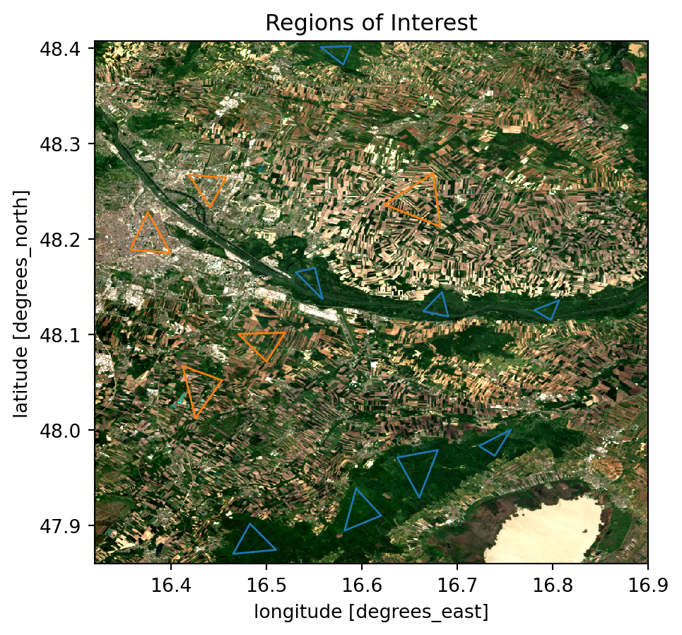
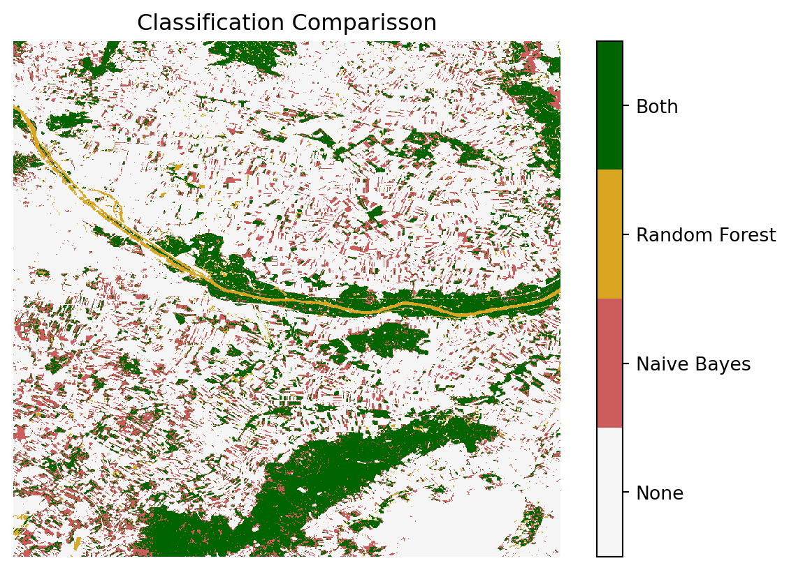

from datetime import datetime, timedelta
import xarray as xr
import pystac_client
import odc.stac
import rioxarray # noqa: F401
import geopandas as gpd
from odc.geo.geobox import GeoBox
from shapely.geometry import Polygon
import cmcrameri as cmc # noqa: F401
import numpy as np
import matplotlib.pyplot as plt
import matplotlib.colors as colors
import pandas as pd
# Scikit Learn
from sklearn.naive_bayes import GaussianNB
from sklearn.ensemble import RandomForestClassifier
from sklearn.metrics import confusion_matrix
from sklearn.metrics import classification_report
from sklearn.model_selection import train_test_splitA.1 Data Acquisition
In this chapter, we will employ machine learning techniques to classify a scene using satellite imagery. Specifically, we will utilize scikit-learn to implement two distinct classifiers and subsequently compare their results. To begin, we need to import the following modules.
Before we start, we need to load the data. We will use odc-stac to obtain data from Earth Search by Element 84. Here we define the area of interest and the time frame, aswell as the EPSG code and the resolution.
A.1.1 Searching in the Catalog
The module odc-stac provides access to free, open source satelite data. To retrieve the data, we must define several parameters that specify the location and time period for the satellite data. Additionally, we must specify the data collection we wish to access, as multiple collections are available. In this example, we will use multispectral imagery from the Sentinel-2 satellite.
dx = 0.0006 # 60m resolution
epsg = 4326
# Set Spatial extent
latmin, latmax = 47.86, 48.407
lonmin, lonmax = 16.32, 16.9
bounds = (lonmin, latmin, lonmax, latmax)
# Set Temporal extent
start_date = datetime(year=2024, month=5, day=1)
end_date = start_date + timedelta(days=10)
time_format = "%Y-%m-%d"
date_query = start_date.strftime(time_format) + "/" + end_date.strftime(time_format)
# Search for Sentinel-2 data
items = pystac_client.Client.open(
"https://earth-search.aws.element84.com/v1"
).search(
bbox=bounds,
collections=["sentinel-2-l2a"],
datetime=date_query,
limit=100,
).item_collection()
print(len(items), 'scenes found')10 scenes foundWe will now focus on the area south-east of Vienna, where the Nationalpark Donauauen is situated. The time frame we are interested in is the beginning of May 2024. After passing these parameters to the stac-catalog we have found 10 scenes that we can use for our analysis.
A.1.2 Loading the Data
Now we will load the data directly into an xarray dataset, which we can use to perform computations on the data. xarray is a powerful library for working with multi-dimensional arrays, making it well-suited for handling satellite data.
Here’s how we can load the data using odc-stac and xarray:
# define a geobox for my region
geobox = GeoBox.from_bbox(bounds, crs=f"epsg:{epsg}", resolution=dx)
# lazily combine items into a datacube
dc = odc.stac.load(
items,
bands=["scl", "red", "green", "blue", "nir"],
chunks={'time': 5, 'x': 600, 'y': 600},
geobox=geobox,
resampling="bilinear",
)
dc<xarray.Dataset> Size: 79MB
Dimensions: (latitude: 913, longitude: 967, time: 10)
Coordinates:
* latitude (latitude) float64 7kB 48.41 48.41 48.41 ... 47.86 47.86 47.86
* longitude (longitude) float64 8kB 16.32 16.32 16.32 ... 16.9 16.9 16.9
spatial_ref int32 4B 4326
* time (time) datetime64[ns] 80B 2024-05-01T09:57:21.858000 ... 202...
Data variables:
scl (time, latitude, longitude) uint8 9MB dask.array<chunksize=(5, 600, 600), meta=np.ndarray>
red (time, latitude, longitude) uint16 18MB dask.array<chunksize=(5, 600, 600), meta=np.ndarray>
green (time, latitude, longitude) uint16 18MB dask.array<chunksize=(5, 600, 600), meta=np.ndarray>
blue (time, latitude, longitude) uint16 18MB dask.array<chunksize=(5, 600, 600), meta=np.ndarray>
nir (time, latitude, longitude) uint16 18MB dask.array<chunksize=(5, 600, 600), meta=np.ndarray>A.2 Data Visualization
A.2.1 RGB Image
With the image data now in our possession, we can proceed with computations and visualizations.
First, we define a mask to exclude cloud cover and areas with missing data. Subsequently, we create a composite median image, where each pixel value represents the median value across all the scenes we have identified. This approach helps to eliminate clouds and outliers present in some of the images, thereby providing a clearer and more representative visualization of the scene.
# define a mask for valid pixels (non-cloud)
def is_valid_pixel(data):
# include only vegetated, not_vegitated, water, and snow
return ((data > 3) & (data < 7)) | (data == 11)
dc["valid"] = is_valid_pixel(dc.scl)
# compute the masked median
rgb_median = (
dc[["red", "green", "blue"]]
.where(dc.valid)
.to_dataarray(dim="band")
.median(dim="time")
.astype(int)
)
# plot the median composite
title_rgb = (
"RGB - Median Composite"
+ f"\n{start_date.strftime('%d.%m.%Y')} - {end_date.strftime('%d.%m.%Y')}"
)
rgb_median.plot.imshow(robust=True).axes.set_title(title_rgb)
plt.show()/usr/share/miniconda/envs/classification/lib/python3.12/site-packages/rasterio/warp.py:387: NotGeoreferencedWarning: Dataset has no geotransform, gcps, or rpcs. The identity matrix will be returned.
dest = _reproject(A.2.2 False Color Image
In addition to the regular RGB Image, we can swap any of the bands from the visible spectrum with any other bands. In this specific case the red band has been changed to the near infrared band. This allows us to see vegetated areas more clearly, since they now appear in a bright red color. This is due to the fact that plants absorb regular red light while reflecting near infrared light (NASA 2020).
# compute a false color image
# near infrared instead of red
fc_median = (
dc[['nir', 'green', 'blue']]
.where(dc.valid)
.to_dataarray(dim="band")
.transpose(..., "band")
.median(dim="time")
.astype(int)
)
title_fc = (
"False color - Median Composite"+
f"\n{start_date.strftime('%d.%m.%Y')} - {end_date.strftime('%d.%m.%Y')}"
)
fc_median.plot.imshow(robust=True).axes.set_title(title_fc)
plt.show()
A.2.3 NDVI Image
To get an first impression of the data, we can calculate the NDVI (Normalized Difference Vegetation Index) and plot it. The NDVI is calculated by useing the following formula. (Rouse et al. 1974)
\[ NDVI = \frac{NIR - Red}{NIR + Red} \]
This gives us a good overview of the vegetation in the area. The values can range from -1 to 1 where the following meanings are associated with these values:
- -1 to 0 indicate dead plants or inanimate objects
- 0 to 0.33 are unhealthy plants
- 0.33 to 0.66 are moderatly healthy plants
- 0.66 to 1 are very healthy plants
# Normalized Difference Vegetation Index (NDVI)
def normalized_difference(a, b):
return (a - b * 1.0) / (a + b)
ndvi = normalized_difference(dc.nir, dc.red)
ndvi.median(dim="time").plot.imshow(
cmap="cmc.cork", vmin=-1, vmax=1
).axes.set_title("NDVI")
plt.show()A.3 Classification
In this chapter, we will classify the satellite data to identify forested areas within the scene. By using supervised machine learning techniques, we can train classifiers to distinguish between forested and non-forested regions based on the training data we provide. We will explore two different classifiers and compare their performance in accurately identifying forest areas.
A.3.1 Regions of Interest
Since this is a supervised classification, we need to have some training data. Therefore we need to define areas or regions, which we are certain represent the feature which we are classifiying. In this case we are interested in forested areas and regions that are definitly not forested. These regions will be used to train our classifiers.
# Define Polygons
forest_areas = {
0: [Polygon([(16.482772, 47.901753), (16.465133, 47.870124), (16.510142, 47.874382), (16.482772, 47.901753)])],
1: [Polygon([(16.594079, 47.938855), (16.581914, 47.894454), (16.620233, 47.910268), (16.594079, 47.938855)])],
2: [Polygon([(16.67984, 47.978998), (16.637263, 47.971091), (16.660376, 47.929123), (16.67984, 47.978998)])],
3: [Polygon([(16.756477, 48.000286), (16.723024, 47.983256), (16.739446, 47.972916), (16.756477, 48.000286)])],
4: [Polygon([(16.80696, 48.135923), (16.780806, 48.125583), (16.798445, 48.115243), (16.80696, 48.135923)])],
5: [Polygon([(16.684097, 48.144438), (16.664634, 48.124366), (16.690788, 48.118892), (16.684097, 48.144438)])],
6: [Polygon([(16.550894, 48.169984), (16.530822, 48.165118), (16.558801, 48.137139), (16.550894, 48.169984)])],
7: [Polygon([(16.588604, 48.402329), (16.556976, 48.401112), (16.580697, 48.382865), (16.588604, 48.402329)])],
}
nonforest_areas = {
0: [Polygon([(16.674974, 48.269126), (16.623882, 48.236281), (16.682272, 48.213168), (16.674974, 48.269126)])],
1: [Polygon([(16.375723, 48.228374), (16.357476, 48.188839), (16.399444, 48.185798), (16.375723, 48.228374)])],
2: [Polygon([(16.457834, 48.26426), (16.418907, 48.267301), (16.440804, 48.23324), (16.457834, 48.26426)])],
3: [Polygon([(16.519266, 48.101861), (16.470607, 48.100645), (16.500411, 48.07145), (16.519266, 48.101861)])],
4: [Polygon([(16.453577, 48.051986), (16.412217, 48.067192), (16.425598, 48.012451), (16.453577, 48.051986)])],
}# Geoppandas Dataframe from Polygons
forest_df = gpd.GeoDataFrame(
{"geometry": [poly[0] for poly in forest_areas.values()]}, crs="EPSG:4326"
)
nonforest_df = gpd.GeoDataFrame(
{"geometry": [poly[0] for poly in nonforest_areas.values()]},
crs="EPSG:4326",
)
# Plotting Regions of Interest
fig, ax = plt.subplots()
rgb_median.plot.imshow(ax=ax, robust=True)
forest_df.plot(ax=ax, ec="C0", fc="none")
nonforest_df.plot(ax=ax, ec="C1", fc="none")
ax.set_title("Regions of Interest")
ax.set_aspect("equal")
plt.show()
A.3.2 Data Preparation
In addition to the Regions of Interest we will extract the specific bands from the loaded dataset that we intend to use for the classification, which are the red, green, blue and near-infrared bands, although other bands can also be utilized. Using these bands, we will create both a training and a testing dataset. The training dataset will be used to train the classifier, while the testing dataset will be employed to evaluate its performance.
# Classifiying dataset (only necessary bands)
bands = ["red", "green", "blue", "nir"]
ds_class = dc[bands].where(dc.valid).median(dim="time")
ds_class = ds_class.fillna(0)
def clip_array(ds: xr.Dataset, polygons):
clipped = ds.rio.clip(polygons, invert=False, all_touched=False, drop=True)
clipped_nan = clipped.where(clipped == ds)
return clipped_nan
# Dictionaries with Dataarrays, each clipped by a Polygon
data_dict_feat = {
idx: clip_array(ds_class, polygon) for idx, polygon in forest_areas.items()
}
data_dict_nonfeat = {
idx: clip_array(ds_class, polygon)
for idx, polygon in nonforest_areas.items()
}# Reshape the polygon dataarrays to get a tuple (one value per band) of pixel values
feat_data = [
xarray.to_array().values.reshape(len(bands), -1).T
for xarray in data_dict_feat.values()
] # replaced median_data_dict_feat with data_dict_feat
nonfeat_data = [
xarray.to_array().values.reshape(len(bands), -1).T
for xarray in data_dict_nonfeat.values()
] # replaced median_data_dict_feat with data_dict_feat
# The rows of the different polygons are concatenated to a single array for further processing
feat_values = np.concatenate(feat_data)
nonfeat_values = np.concatenate(nonfeat_data)
# Drop Nan Values
X_feat_data = feat_values[~np.isnan(feat_values).any(axis=1)]
X_nonfeat_data = nonfeat_values[~np.isnan(nonfeat_values).any(axis=1)]# Creating Output Vector (1 for pixel is features; 0 for pixel is not feature)
y_feat_data = np.ones(X_feat_data.shape[0])
y_nonfeat_data = np.zeros(X_nonfeat_data.shape[0])
# Concatenate all Classes for training
X = np.concatenate([X_feat_data, X_nonfeat_data])
y = np.concatenate([y_feat_data, y_nonfeat_data])
# Split into Training and Testing Data.
X_train, X_test, y_train, y_test = train_test_split(
X, y, test_size=0.5, random_state=42
)Now that we have prepared the training and testing data, we will create an image array of the actual scene that we intend to classify. This array will serve as the input for our classification algorithms, allowing us to apply the trained classifiers to the entire scene and identify the forested and non-forested areas accurately.
image_data = (
ds_class[bands]
.to_array(dim="band")
.transpose("latitude", "longitude", "band")
)
# Reshape the image data
num_of_pixels = ds_class.sizes["longitude"] * ds_class.sizes["latitude"]
num_of_bands = len(bands)
X_image_data = image_data.values.reshape(num_of_pixels, num_of_bands)A.3.3 Classifiying with Naive Bayes
Now that we have prepared all the needed data, we can begin the actual classification process.
We will start with a Naive Bayes classifier. First, we will train the classifier using our training dataset. Once trained, we will apply the classifier to the actual image to identify the forested and non-forested areas.
# Naive Bayes initialization and training
nb = GaussianNB()
nb_test = nb.fit(X_train, y_train)
nb_predict = nb.predict(X_test)
# Prediction on image
nb_predict_img = nb.predict(X_image_data)
nb_predict_img = nb_predict_img.reshape(
ds_class.sizes["latitude"], ds_class.sizes["longitude"]
)
# Adding the Naive Bayes Prediction to the dataset
ds_class["NB-forest"] = xr.DataArray(
nb_predict_img,
dims=["latitude", "longitude"],
coords={
"longitude": ds_class["longitude"],
"latitude": ds_class["latitude"],
},
)To evaluate the effectiveness of the classification, we will plot the image predicted by the classifier. Additionally, we will examine the Classification Report and the Confusion Matrix to gain further insights into the classifier’s performance.
# Plot Naive Bayes
alpha = 1
cmap_green = colors.ListedColormap([(1, 1, 1, alpha), "green"])
plot = ds_class["NB-forest"].plot.imshow(
cmap=cmap_green, cbar_kwargs={"ticks": [0.25, 0.75]}
)
cbar = plot.colorbar
cbar.set_ticklabels(["non-forest", "forest"])
plot.axes.set_title("Naive Bayes Classification")
plt.show()
# Print the Classification report
print("NAIVE BAYES: \n " + classification_report(y_test, nb_predict))
# Print the confusion matrix
con_mat_nb = pd.DataFrame(
confusion_matrix(y_test, nb_predict),
index=["Actual Negative", "Actual Positive"],
columns=["Predicted Negative", "Predicted Positive"],
)
display(con_mat_nb)NAIVE BAYES:
precision recall f1-score support
0.0 0.95 0.82 0.88 6618
1.0 0.81 0.95 0.88 5487
accuracy 0.88 12105
macro avg 0.88 0.88 0.88 12105
weighted avg 0.89 0.88 0.88 12105
| Predicted Negative | Predicted Positive | |
|---|---|---|
| Actual Negative | 5406 | 1212 |
| Actual Positive | 276 | 5211 |
A.3.4 Classifiying with Random Forest
To ensure our results are robust, we will explore an additional classifier. In this section, we will use the Random Forest classifier. The procedure for using this classifier is the same as before: we will train the classifier using our training dataset and then apply it to the actual image to classify the scene.
# Random Forest initialization and training
rf = RandomForestClassifier(n_estimators=100)
rf_test = rf.fit(X_train, y_train)
rf_predict = rf.predict(X_test)
# Prediction on image
rf_predict_img = rf.predict(X_image_data)
rf_predict_img = rf_predict_img.reshape(
ds_class.sizes["latitude"], ds_class.sizes["longitude"]
)
# Adding the Random Forest Prediction to the dataset
ds_class["RF-forest"] = xr.DataArray(
rf_predict_img,
dims=["latitude", "longitude"],
coords={
"longitude": ds_class["longitude"],
"latitude": ds_class["latitude"],
},
)
plot = ds_class["RF-forest"].plot.imshow(
cmap=cmap_green, cbar_kwargs={"ticks": [0.25, 0.75]}
)
cbar = plot.colorbar
cbar.set_ticklabels(["non-forest", "forest"])
plot.axes.set_title("Random Forest Classification")
plt.show()
# Print the Classification report
print("RANDOM FOREST: \n " + classification_report(y_test, rf_predict))
# Print the confusion matrix
con_mat_rf = pd.DataFrame(
confusion_matrix(y_test, rf_predict),
index=["Actual Negative", "Actual Positive"],
columns=["Predicted Negative", "Predicted Positive"],
)
display(con_mat_rf)RANDOM FOREST:
precision recall f1-score support
0.0 0.96 0.95 0.95 6618
1.0 0.94 0.95 0.95 5487
accuracy 0.95 12105
macro avg 0.95 0.95 0.95 12105
weighted avg 0.95 0.95 0.95 12105
| Predicted Negative | Predicted Positive | |
|---|---|---|
| Actual Negative | 6294 | 324 |
| Actual Positive | 270 | 5217 |
We can already see from the classification reports and the confusion matrices that the Random Forest classifier has outperformed the Naive Bayes classifier. This is particularly evident from the lower values in the secondary diagonal, indicating minimal False Positives and False Negatives. It appears that the Naive Bayes classifier is more sensitive to False Positives, resulting in a higher rate of incorrect classifications.
A.3.5 Comparison of the Classificators
To gain a more in-depth understanding of the classifiers’ performance, we will compare their results. Specifically, we will identify the areas where both classifiers agree and the areas where they disagree. This comparison will provide valuable insights into the strengths and weaknesses of each classifier, allowing us to better assess their effectiveness in identifying forested and non-forested regions.
Code
cmap_trio = colors.ListedColormap(
["whitesmoke", "indianred", "goldenrod", "darkgreen"]
)
double_clf = ds_class["NB-forest"] + 2 * ds_class["RF-forest"]
fig, ax = plt.subplots()
cax = ax.imshow(double_clf, cmap=cmap_trio, interpolation="none")
# Add a colorbar with custom tick labels
cbar = fig.colorbar(cax, ticks=[1 * 0.375, 3 * 0.375, 5 * 0.375, 7 * 0.375])
cbar.ax.set_yticklabels(["None", "Naive Bayes", "Random Forest", "Both"])
ax.set_title("Classification Comparisson")
ax.set_axis_off()
plt.show()
The areas where both classifiers agree include the larger forested regions, such as the Nationalpark Donau-Auen and the Leithagebirge. Additionally, both classifiers accurately identified the urban areas of Vienna and correctly excluded them from being classified as forested.
Code
# Plot only one class, either None (0), Naive Bayes (1), Random Forest (2), or Both (3)
fig, axs = plt.subplots(2, 2, figsize=(8, 8))
ax = axs.ravel()
for i in range(4):
ax[i].imshow(double_clf == i, cmap="cmc.oleron_r", interpolation="none")
category = [
"by None",
"only by Naive Bayes",
"only by Random Forest",
"by Both",
][i]
title = "Areas classified " + category
ax[i].set_title(title)
ax[i].set_axis_off()
plt.tight_layout()When plotting the classified areas individually, we observe that the Random Forest classifier mistakenly identified the Danube River as a forested area. Conversely, the Naive Bayes classifier erroneously classified a significant amount of cropland as forest.
Finally, by analyzing the proportion of forested areas within the scene, we find that approximately 18% of the area is classified as forest, while around 66% is classified as non-forest. The remaining areas, which include water bodies and cropland, fall into less clearly defined categories.
The accompanying bar chart illustrates the distribution of these classifications, highlighting the percentage of forested areas, non-forested areas, and regions classified by only one of the two classifiers. This visual representation helps to quantify the areas of agreement and disagreement between the classifiers, providing a clearer picture of their performance.
Code
counts = {}
for num in range(0, 4):
num_2_class = {0: "None", 1: "Naive Bayes", 2: "Random Forest", 3: "Both"}
counts[num_2_class[num]] = int((double_clf == num).sum().values)
class_counts_df = pd.DataFrame(
list(counts.items()), columns=["Class", "Count"]
)
class_counts_df["Percentage"] = (
class_counts_df["Count"] / class_counts_df["Count"].sum()
) * 100
ax = class_counts_df.plot.bar(
x="Class",
y="Percentage",
rot=0,
color="darkgreen",
ylim=(0, 100),
title="Classified Areas per Classificator (%)",
)
# Annotate the bars with the percentage values
for p in ax.patches:
ax.annotate(
f"{p.get_height():.1f}%",
(p.get_x() + p.get_width() / 2.0, p.get_height()),
ha="center",
va="center",
xytext=(0, 9),
textcoords="offset points",
)A.4 Conclusion
In this chapter, we utilized machine learning to classify satellite imagery into forested and non-forested areas, comparing Naive Bayes and Random Forest classifiers. The Random Forest classifier generally outperformed Naive Bayes, with fewer errors in classification, although it misclassified the Danube River as forested, while Naive Bayes incorrectly identified cropland as forest. The analysis, supported by the bar chart, revealed that about 18% of the scene was classified as forest, 66% as non-forest, and the remainder included ambiguous categories. This comparison highlights the strengths and limitations of each classifier, underscoring the need for careful selection and evaluation of classification methods.